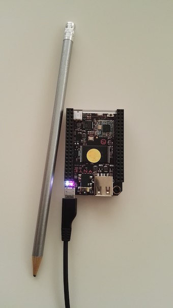
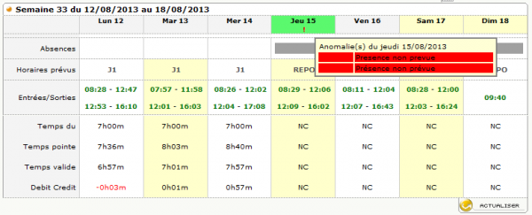

Enrico Spinielli
Blog
Projects
Publications
About
Categories
All
(29)
Android
(1)
Astronomy
(1)
Calendars
(1)
Croquet
(1)
D3
(3)
GIS
(2)
LaTeX
(6)
Literate Programming
(2)
Maps
(2)
Python
(4)
R
(1)
Vega
(1)
docker
(1)
git
(1)
javascript
(2)
keyboard
(1)
lisp
(1)
recruitment
(1)
repair
(1)
smalltalk
(1)
webscrape
(1)
wiki
(1)
Blog
News, tips, and rantings
Expandig Kobo Clara HD’s microSD Card
The COVID-19 lockdown in Belgium was officially enforced on noon 18th Mar 2020 but at home we were already quarantined…
Apr 19, 2020
Enrico Spinielli
Writing a Twitter Bot in R
R
Maps
Since a while I am contemplating the possibility of automatically publishing on social media some stats and data visualisations from work.
Jun 30, 2018
Enrico Spinielli
ErgoDox keyboard
keyboard
Now that I have a new blog setup, I can more quickly post what has been since long time in the making: my ErgoDox keyboard.
Jun 30, 2018
Enrico Spinielli
New Blog Engine
I finally decided to give it a try and then switched to
blogdown
(here the free book.)
Jan 2, 2018
Enrico Spinielli
Docker image for locally testing Oracle
docker
This post describes my journey to building and using a docker image for Oracle.
Oct 31, 2016
Enrico Spinielli

Setting C.H.I.P. up
Few weeks ago I finally received my C.H.I.P. and PocketC.H.I.P.
Aug 7, 2016
Enrico Spinielli
DVD to Android Tablet
Android
Suppose your kids want to watch their DVDs in the car on their Android tablet…
Apr 2, 2016
Enrico Spinielli
Learning Vega 2.0 a.k.a. Reactive Vega
Vega
D3
Vega 2.0 adds a
grammar of interaction
to the
grammar of graphics
implemented in Vega 1.0.
Aug 8, 2015
Enrico Spinielli
How to add a new chart type to dc.js
D3
This is a step by step description of how I extended dc.js with a new chart type. It is inspired by a wiki page by Thomas Robert.
Apr 21, 2015
Enrico Spinielli

HTML Scraping or Surviving Orrible Corporate Tools
webscrape
At work I have to fill my weekly timesheet. We use Planisware’s Timecard to record time spent on the various projects we are assigned to work on.
Feb 7, 2015
Enrico Spinielli
How Internet Long Tail Helped Me Fixing My Smartphone
repair
I am just more and more amazed by the opportunities offered by the current Internet connectivity: they call it the long tail.
Jan 30, 2015
Enrico Spinielli
Understanding Great Circle Arcs Intersection Algorithm
Maps
D3
The following material is the result of my attempt to understand the nice example from Jason Davies. I was puzzled about the origin of the…
Oct 19, 2014
Enrico Spinielli
Failing to be recruited…
recruitment
This post title to be frank should have been “
I…
Aug 29, 2014
Enrico Spinielli
on revising
Lately I found myself involved into writing.
May 13, 2013
Enrico Spinielli
Automatically extracting bomb drops from the Blitz Bomb Census maps
GIS
Python
May 19, 2012
Enrico Spinielli
wiki of the future?
javascript
LaTeX
wiki
Last weekend I have been watching, reading and playing around with Ward Cunningham’s Smallest Federated Wiki. As usual he is a great designer and aims to simple, effective, understandable and useful tools! I particularly like the plugins idea (not new of…
Apr 19, 2012
Enrico Spinielli
syntax highlight
javascript
Apr 18, 2012
Enrico Spinielli
metacircularity
lisp
I found and liked a very good summary of the ‘Maxwell Equations of software’ motto from Alan Kay in this post from Michael Nielsen.
Apr 18, 2012
Enrico Spinielli
Git and RSA identities
git
Here is the solution I found to be able to use
git
with a different RSA identity than the
rsa_id
default one.
Feb 6, 2012
Enrico Spinielli
LaTeX on Blogger again
LaTeX
Revisited in 2022 to make it work wit Quarto…where things are so easy!
Jan 20, 2012
Enrico Spinielli
(What was) Croquet is maybe still alive
It seems there is still some hope to see Croquet (or, OpenCobalt which took off from where Croquet stopped) alive and based on latest Squeak and more importantly using Cog VM.
Mar 26, 2011
Enrico Spinielli
Investigating Pier
smalltalk
I have been playing around with Pier.
Oct 31, 2010
Enrico Spinielli
LaTeX on Blogger
LaTeX
Revisited in 2022 where Quarto makes everything easy.
Nov 11, 2009
Enrico Spinielli
Geomapping: what a wonderful world!
GIS
Suppose you have a set of lat/lon points, where do you find out their elevation?
Oct 27, 2009
Enrico Spinielli
PyCalCal is out!
Python
Calendars
Astronomy
I finally set to put PyCalCal out in the open.
Oct 26, 2009
Enrico Spinielli
Giants’ Shoulders in music
A nice song about a great Giant, Galileo, by the Chromatics.
Jul 28, 2009
Enrico Spinielli
Scons and noweb
LaTeX
Python
Literate Programming
I was curious to see how I could integrate noweb and Scons.
Jun 14, 2009
Enrico Spinielli
LaTeX, Python and Literate Programming
LaTeX
Python
In my spare time (a couple of hours per weekend…!) I am implementing calcal, a Python version of calendrica-3.0.cl, the Common Lisp implementation of the calendars from N.…
Feb 24, 2009
Enrico Spinielli
My Giants
LaTeX
Croquet
Literate Programming
I am probably too selective, anyway my models for computer science/software engineering (one of them would disagree on both definitions) are just two: Donald E. Knuth and Ala…
Feb 23, 2009
Enrico Spinielli
No matching items